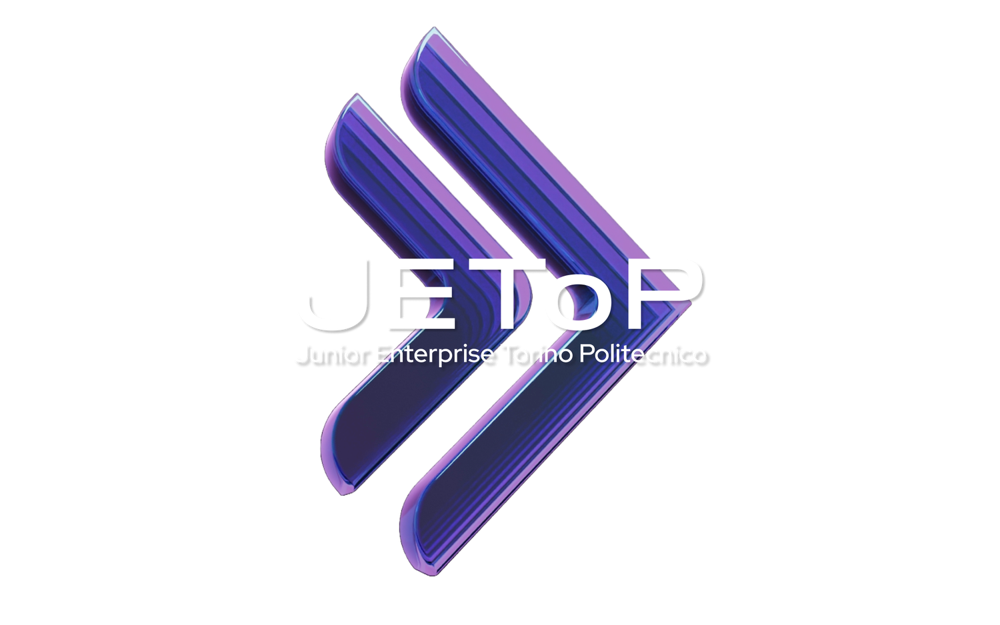

Candidatura
Il form alimenta Notion.
Ogni risposta al form diventa una scheda candidato completa: dati, CV, aree di preferenza. Il candidato riceve subito una email di ringraziamento.
Form > Notion > email di conferma
REC Automation orchestra candidature, agenda e comunicazioni della selezione JEToP. Le decisioni restano al team, l'esecuzione passa al sistema.
Guarda il processo
REC Automation prende in carico la parte meccanica del recruiting: registra le candidature, applica i filtri di idoneità, incrocia le disponibilità, fissa i colloqui, scrive ai candidati e tiene ogni stato allineato. In tempo reale, senza passaggi a mano.
Il REC è il momento più intenso dell'anno per l'Area Talent: decine di candidature in pochi giorni e tre persone da coordinare per ogni colloquio, mentre i candidati rispondono, spostano, rinunciano. Gestirlo a mano significa ore di lavoro meccanico ed errori inevitabili.
Ogni colloquio richiede tre responsabili, due responsabili della prima e della seconda area di preferenza, e un membro Talent: tre agende da far combaciare, ogni volta.
Convocazioni, spostamenti, esiti: ogni email scritta, ricontrollata e inviata singolarmente, con il rischio di doppi invii e dimenticanze.
Fogli, chat e memoria personale: nessuna fonte unica della verità su chi è stato contattato, convocato, valutato.
Stesso processo, stesse persone, stesse decisioni. Sparisce solo la parte che non aveva bisogno di noi.
Il form alimenta Notion.
Ogni risposta al form diventa una scheda candidato completa: dati, CV, aree di preferenza. Il candidato riceve subito una email di ringraziamento.
I requisiti si verificano da soli.
Età, lingua e università vengono controllate all'arrivo. Chi non rientra nei requisiti riceve una risposta rispettosa, con un testo dedicato a ogni motivo.
L'algoritmo trova l'incastro.
Ogni mattina alle 9 il sistema legge i fogli di disponibilità e compone gli slot: prima area, seconda area e Talent, senza conflitti né doppie prenotazioni.
Tutto parte in automatico.
Email di convocazione al candidato, evento sul calendario condiviso, slot bloccati sui fogli. Ogni invio ha un lock che impedisce i duplicati.
Il team lavora dal telefono.
Briefing del mattino, scheda candidato, spostamenti e ritiri: tutto dal gruppo Telegram, con bottoni e conferme, senza aprire un gestionale.
Decisione umana, esecuzione automatica.
Promosso al tecnico, accettato o rifiutato: il team sceglie, il sistema aggiorna Notion e invia onboarding o esclusione. Le scelte irreversibili chiedono sempre conferma.
L'intero processo si governa dal gruppo Telegram dell'Area Talent: sedici comandi coprono agenda, candidati, valutazioni e manutenzione. Nessuna dashboard da imparare.
I colloqui del giorno, con la scheda completa di ogni candidato a un tap di distanza.
Il sistema propone tre slot alternativi reali: il candidato sceglie e tutto si riallinea da solo.
La valutazione post colloquio: promozione al tecnico con le aree, esclusione o ripescaggio.
Il cervello operativo del progetto: 399 nodi in 3 workflow e 5 trigger automatici, su istanza dedicata. Ogni modifica passa da backup, validazione e verifica.
La fonte unica della verità: schede candidato, stati, esiti e storico, visibili a tutto il Board in ogni momento.
L'interfaccia del team: comandi, schede e bottoni di azione nel gruppo dell'Area Talent.
Le disponibilità dei responsabili, lette dall'algoritmo e protette cella per cella a ogni prenotazione.
Ogni colloquio fissato sul calendario condiviso e aggiornato a ogni spostamento o ritiro.
Convocazioni, conferme ed esiti: tutte le comunicazioni partono dalla casella ufficiale, con il template del brand.
La memoria tecnica: slot assegnati, lock anti duplicato e code di lavoro, sempre interrogabili.
Classifica le risposte dei candidati e compone le email dei casi particolari, dentro binari definiti dal team.
Governa il processo dal bot: approva le convocazioni, registra gli esiti dei colloqui, decide promozioni e rifiuti.
Tengono aggiornate le proprie disponibilità sui fogli e conducono i colloqui. Nient'altro.
Visibilità completa e in tempo reale su Notion: candidature, stati, esiti, senza chiedere report a nessuno.
Niente doppi invii. Ogni comunicazione ha un lock: anche in caso di retry, l'email parte una volta sola.
Errori visibili subito. Un error handler dedicato notifica nel gruppo qualsiasi anomalia, con il contesto per intervenire.
Tutto tracciato. Ogni esecuzione è registrata e ispezionabile passo per passo, nodo per nodo.
Credenziali protette. Token e chiavi vivono in variabili d'ambiente, mai nel codice o nelle chat.
Conferme obbligatorie. Le azioni irreversibili, come il rifiuto definitivo, chiedono sempre una conferma esplicita.
I tre workflow sono attivi e verificati su dati reali: trigger, protezioni, notifiche e comandi funzionano ed è tutto monitorato.
Responsabili e Area Talent ricevono fogli disponibilità e accesso al gruppo: prova generale del flusso completo su candidati di test.
Il primo recruiting interamente orchestrato dal sistema, dall'apertura del form agli onboarding dei nuovi associati.
Metriche del funnel, tempi reali e feedback del team decidono le evoluzioni: statistiche, nuovi comandi, altri processi da orchestrare.
Il sistema è pronto, testato e in produzione. Domande, dubbi e proposte: parliamone in riunione.
Scrivi a hr@jetop.com